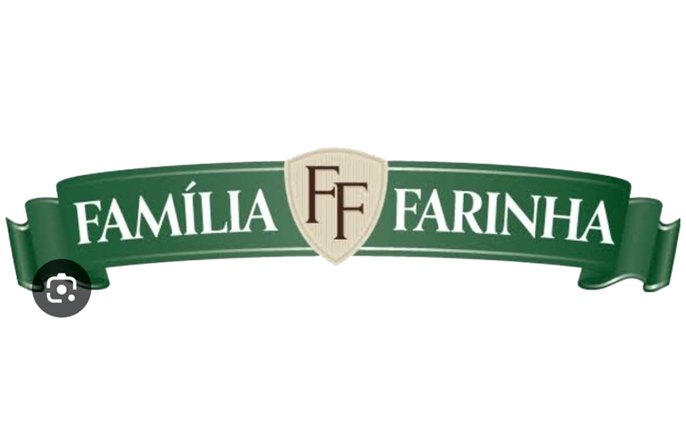

Adequação ambiental e logística eficiente para indústrias, restaurantes e condomínios. Deixe a gestão de resíduos com quem entende.
Fazer Orçamento pelo WhatsAppUm processo direto, sem burocracia e focado na sua necessidade.
Você entra em contato com nosso time pelo WhatsApp e explica o tipo e a quantidade de material que seu negócio gera.
Avaliamos sua demanda e definimos juntos o melhor plano, frequência de coleta e orçamento ideal para sua operação.
Nossa equipe realiza a retirada pontual e emitimos toda a documentação legal comprovando a destinação correta.
Processamos e destinamos corretamente grandes volumes do seu negócio.


Atendendo Curitiba e Região Metropolitana com agilidade e inteligência de rotas.
Parcerias sólidas com empresas que levam a sustentabilidade a sério.


